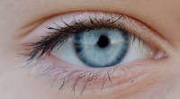
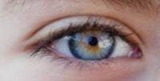
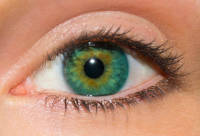
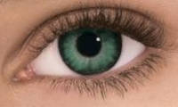

The first one is the beatiful, but not so common in Brazil, blue eyes, considered for much people the most beautifull.
 Now let's see some green eyes. Thesse eyes are so beatifuls omg.
 This is the end of another workout (treino), today we saw blues and greens eyes, but we didn't see brown and black eyes. See you in the next workout, bye! 😊